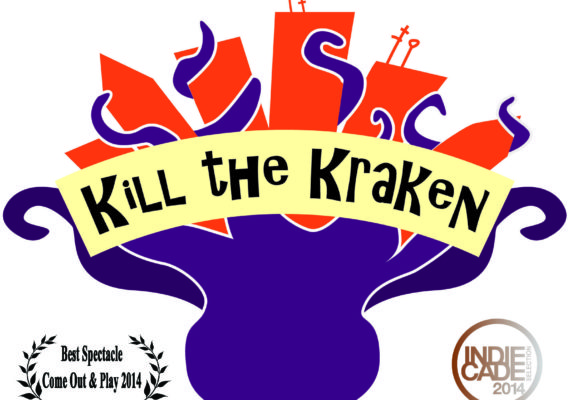

Game 45/100
Kill the Kraken!
Pool noodles, throwing socks, basket poles, and hula-hoops come together in one fierce game: Kill the Kraken! A fast paced asymmetric-team field game for 8 to 14 players, Kill the Kraken! is inspired by Humans versus Zombies and simulates a humans versus monster scenario. But rather than pitting human players against a horde of Zombies, Kill the Kraken! pits
Year2014
Development2 weeks
AvailabilityPlayable